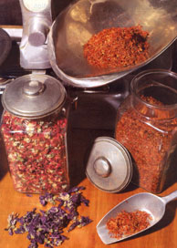
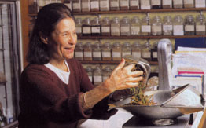
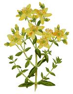
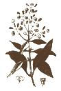

Herbs can be safer and less expensive than conventional drugs.
Many Americans believe we have the world's best health-care system-that's certainly what medical doctors and government health experts keep telling us. But did you know that a recent report in the journal of the American Medical Association said that "adverse drug reactions are believed to be the leading cause of death in the United States"?
If this system is the best, it leaves a lot to be desired. Plenty of people assume that the pharmaceuticals their doctors prescribe are better than herbal medicines. I'm delighted this situation is rapidly changing.
I've been a botanist specializing in medicinal plants for most of my 30-year career and I've seen medicinal herbs successfully treat conditions high-tech pharmaceuticals barely touched. One reason herbs aren't better known in the United States is that the drug companies can't patent them-yet. Drug companies make much of their money by pulling the medicinally active molecules out of herbs, then tinkering with them until they're chemically unique. The companies can then patent their new molecules, give them brand names and sell them back to us for a lot more money than their original herbal sources cost.
HERBS ARE GOOD MEDICINE
Of course, drug companies always say their unique molecules are better, stronger and safer than herbs. I'll readily agree that they are stronger. In fact, they're often too strong and may have more side effects than their herbal precursors.
As for pharmaceuticals being better, that's hard to say. In some studies, herbs clearly perform better. Ginger, for example, has been shown to be superior to the pharmaceutical dimenhydrinate (Dramamine) as a preventive ther apy for motion sickness. In several recent studies in Europe, St. John's wort has proven as good as synthetics for treating mild to moderate depression; saw palmetto as good as synthetics for enlarged prostates; ginkgo biloba as good as the first approved synthetic for Alzheimer's disease. And all have fewer side effects and all are cheaper than the competing synthetics.
I'm not saying pharmaceuticals are bad. I am saying we need more research comparing herbs against pharmaceutical drugs in fair, well-designed trials. Until that happens, we simply won't know which is better. That leads me to the conclusion that Americans are not necessarily getting the best medicine. In many cases, herbal therapies may prove to be more economical,. more effective and safer-all with fewer side effects-than the pharmaceuticals.
Our challenge is to transcend the assumptions made by doctors, drug companies' promotions and the restrictive drug approval process used by the U.S. government. Our challenge is to think green -not the monetary green of the pharmaceutical firms but the cleansing, empowering green of chlorophyll, which feeds, fuels, oxygenates and medicates our planet.
Economics drive the pharmaceutical companies, but what drives the green lifestyle is ecology: the idea that we're connected to everything else on the planet and that we thrive or fall together.
PUT SAFETY FIRST
Herbal medicine is not risk-free. To benefit from using herbs, you need to have some basic information. Then you need to have confidence in the herbs you use and in any herbal practitioner you consult. This is no different from conventional medicine in which you need to have confidence in your physician and any drugs he or she prescribes.
As a rule, however, herbal medicine prescribed by knowledgeable practitioners is safer than conventional medicine-the medicines. are more dilute and the side effects tend to be less severe. Pharmaceuticals kill more than 100,000 Americans a year, according to JAMA. No one has shown yet that herbs kill more than even 100 Americans a year, much less 100,000. You must exercise caution when using any medicines, as things can go wrong, but there are strategies you can use to protect yourself from herbal errors.
LEARN WHAT THEY ARE
While there are some 300,000 higher plant species that are all chemically distinct, fewer than 10 percent have been carefully screened for their medicinal and toxic constituents. A really good herbalist might know 1,000 to 2,000 species, rarely more. I wish I were sure of that many!
Experienced as well as inexperienced herbalists can make mistakes. Once, while gathering herbs for a class in the Blue Ridge Mountains, yours truly got all excited at the discovery of some "wild ginseng." On closer examination, I was chagrined to discover it was Virginia creeper.
Whatever new herb, medicine or food you're taking, learn as much as you can about what to expect from it. If anything unexpected happens, stop taking it and check with an expert you trust.
Confirm the diagnosis. Herbal devotees sometimes get the idea they can diagnose illness as well as come up with herbs to treat it. Some are good at diagnosis, some are not. Diagnosis is a separate art and one I'd rather leave to physicians. I discourage self-diagnosis.
Diagnosing illness is not easy, and sometimes even good doctors make mistakes. But physicians' diagnostic batting averages should usually be better than those of anyone who hasn't had medical training. Those who believe in intuition might argue with this, suggesting that an intuitive herbalist with a 60-minute interview is better than a non-intuitive physician in a six-minute interview. Once you're confident of a diagnosis, you can discuss with your health practitioner how to treat the condition: drugs, herbs or some combination of the two, plus diet, exercise and lifestyle changes. If you observe proper diet, exercise and stress reduction measures, you are less likely to need the herbs I favor or the physician's drugs.
Watch out for side effects. All medicines, natural or synthetic, have side effects. It's hard to imagine an active plant chemical (phytochemical)or an herbal mixture containing thousands of them having just one targeted chemical reaction in our body.
Watch yourself when taking any herb, food or pharmaceutical for the first time. If you have an unpleasant reaction, such as dizziness, nausea or headache, cut back on your dosage or stop! Listen to your body. If things don't feel right, don't continue.
Be alert for allergic reactions. People can be allergic to anything. Even if you have no known allergies, you might be allergic to a new herb, food or drug. Go slowly. Again, listen to your body. If you develop any unusual symptoms, stop and consult an allergist or physician.
If you experience any difficulty breathing within 30 minutes or so of trying a new herb, food or drug, call 911 immediately. You may be having an anaphylactic reaction, the most severe form of allergic reaction, which can prove fatal unless promptly treated.
Although anaphylactic reactions to herbs are rare, there are foods, herbs and pharmaceuticals that can cause fatal idiosyncratic reactions. So be careful and understand the possible risks.
Beware of interactions. Pharmaceutical medicines sometimes interact badly with each other, as well as with herbs and foods. Too many herbal reference books neglect to mention this. Always be particularly careful when taking more than one drug or herb, or a combination of a drug and an herb. If you suspect a bad interaction, consult your physician or pharmacist.
Open communication. Many people listen to both their physicians and their herbalists and do what both advise. Usually there's no problem with this, such as when a physician gives you sleeping pills for insomnia, for example, and an herbalist recommends a hot bath before bed with a blend of sedative aromatherapy oils.
But too many health practitioners, like too many pills, can be too much of a good thing. Tell your physician and your herbalist about all the medicines you're taking as well as any unusual foods you might be eating.
One of the world's leading authorities on herbal healing, James Duke is author of The Green Pharmacy (see MOTHER'S Bookshelf, Page 88). Active in rain forest preservation, he leads ecotours in the Amazon. Contact jimduke@cpcug.org .
Spice for Your Life
In addition to the many herbs you can buy in bulk or standardized form, many spices double as medicine. You probably already have some of these in your spice rack. With the exception of capsicum, garlic, ginger and turmeric, most spices are not available in the United States as standardized extracts. Except for garlic, most are tropical plants that don't grow well here, so you'll probably have to buy them in bulk or powdered form.
Allspice. This tropical herb has a complex aroma and is useful for indigestion.
Cardamom. An expensive spice, cardamom can be a mild stimulant.
Cinnamon. This tasty spice has potent antimicrobial action and can settle an upset stomach.
Cloves. Cloves have proven pain relieving and antiseptic properties.
Garlic. Called Russian penicillin, this pungent bulb is useful in preventing our major killers heart disease and cancer.
Ginger. The world's best nausea preventive, ginger also is useful in treating arthritis.
Red pepper (capsicum). This spice, which is native to America, works on pain by three different mechanisms.
Sesame. The seeds of this plant are a great source of antioxidants and other therapeutic chemicals.
Turmeric. This yellow spice shows great promise in treating arthritis and diabetes.
|
 St. John's Wort Your herbalist and doctor should know what the other has recommended, for safety's sake |
 |
 |
|
 |
|
|